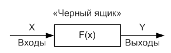
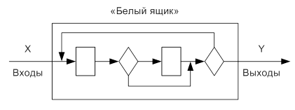
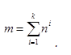

Существует два принципа тестирования программного обеспечения - функциональное тестирование ( тестирование “чёрного ящика”) и структурноетестирование ( тестирование “белого ящика”).
Функциональное тестирование («чёрного ящика»).
При тестировании “чёрного ящика” рассматриваются системные характеристики программ, а их внутренняя логическая структура не рассматривается. Таким образом, функции программы считаются известными и целью тестирования является исследование работы каждой функции на всей области ее определения. Исчерпывающее тестирование, как правило, невозможно. Например, если в программе 10 входных величин и каждая принимает по 10 значений, то потребуется 1010 тестовых вариантов. Отметим также, что тестирование “чёрного ящика” не реагирует на многие особенности программных ошибок.
Как показано на рис. 2.12, основное место приложения тестов «черного ящика» — интерфейс ПО, то есть тестирование входов и выходов программы.

Рис. 2.12. Тестирование «черного ящика»
Эти тесты демонстрируют:
· как выполняются функции программ;
· как принимаются исходные данные;
· как вырабатываются результаты;
· как сохраняется целостность внешней информации.
Структурное тестирование («белого ящика»).
Объектом тестирования здесь является не внешнее , а внутреннее поведение программы. Проверяется корректность построения всех элементов программы и правильность их взаимодействия друг с другом. Обычно анализируется управляющие связи элементов, реже — информационные связи. Тестирование по принципу “белого ящика” характеризуется степенью, в какой тесты выполняют или покрывают логику ( исходный текст ) программы. Исчерпывающее тестирование также затруднительно.
Таким образом, при структурном тестировании по известной структуре программы (тексту) исследуются связи между ее отдельными элементами (рис. 2.13).

Рис. 2.13. Схема тестирования «белого ящика»
Обычно тестирование “белого ящика” основано на анализе управляющей структуры программы. Программа считается полностью проверенной, если проведено исчерпывающее тестирование маршрутов (путей) ее графа управления.
Тестовые варианты должны гарантировать проверку всех независимых маршрутов программы, прохождение ветвей True, False для всех логических решений, а также выполнение всех циклов (в пределах их границ и диапазонов). Кроме этого, необходимо анализировать правильность внутренних структур данных.
К недостаткам тестирования ”белого ящика” можно отнести то обстоятельство, что количество независимых маршрутов может быть очень велико. Например, если цикл в программе выполняется k раз, а внутри цикла имеется п ветвлений, то количество маршрутов вычисляется по формуле

При п = 5 и k = 20 количество маршрутов т = 1014.
Кроме этого, исчерпывающее тестирование маршрутов не гарантирует соответствия программы исходным требованиям к ней.
Достоинства тестирования “белого ящика“ связаны с тем, что принцип “ белого ящика” позволяет учесть специфические особенности программных ошибок, такие, как неравномерность распределения ошибок в программ ( количество ошибок минимально в “центре” и максимально на “периферии” программы) или то, что некоторые результаты в программе зависят не от исходных данных, а от внутренних состояний программы.
Кроме этого, многие методы этого способа тестирования достаточно формализованы, а потому могут использоваться в различных автоматизированных системах тестирования.
Примерами таких методов являются тестирование базового пути, тестирование условий, тестирование ветвей и отношений, тестирование потоков данных и ряд других. Рассмотрим подробнее первый и последний из упомянутых методов.